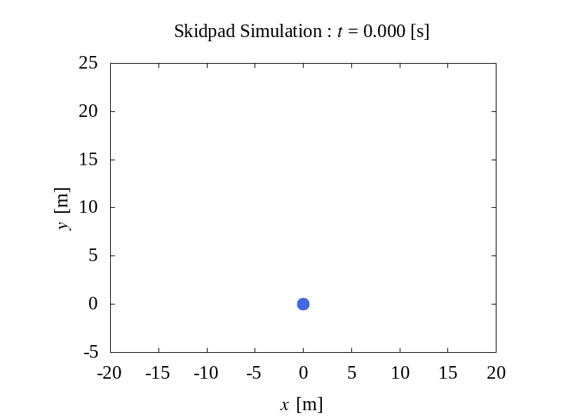

GPSと加速度センサによる自己位置推定の話
1. GPSがあるとどのくらい推定精度が向上するのか？

スキッドパッドのシミュレーション（真値）
数値シミュレーションでスキッドパッドの走行を再現
| 走行速度 | 40.00 | [km/h] |
| 回転半径 | 7.625 | [m] |
| GPS周波数 | 2.000 | [Hz] |
| 加速度センサ周波数 | 100.0 | [Hz] |

加速度データの積算 + GPS位置補正
IMU単独推定時に比べて，
RMSEは約10%まで減少する
| RMSE (真値との誤差) | 0.143 | [m] |
要するに加速度センサーに乗る積算誤差を
GPSで補正すれば使えるデータになる
2. 加速度センサを使ってみる

6軸センサ (MPU6050)
いわゆる "IMU" と呼ばれるセンサです
加速度3成分(x,y,z) + 角加速度3成分(x,y,z)
の合計 6軸 について計測してくれます
Amazonで 5個入 1500円くらい
はんだ下手だけど機械科だから許して🥲
計測データの取得 (補足)
どうやら Excel のアドオンを使えば
Arduino から直接 Excel に取り込めるらしい...
テスト時やPCを接続したまま計測可能データなら
データ処理が簡単そうですな👍